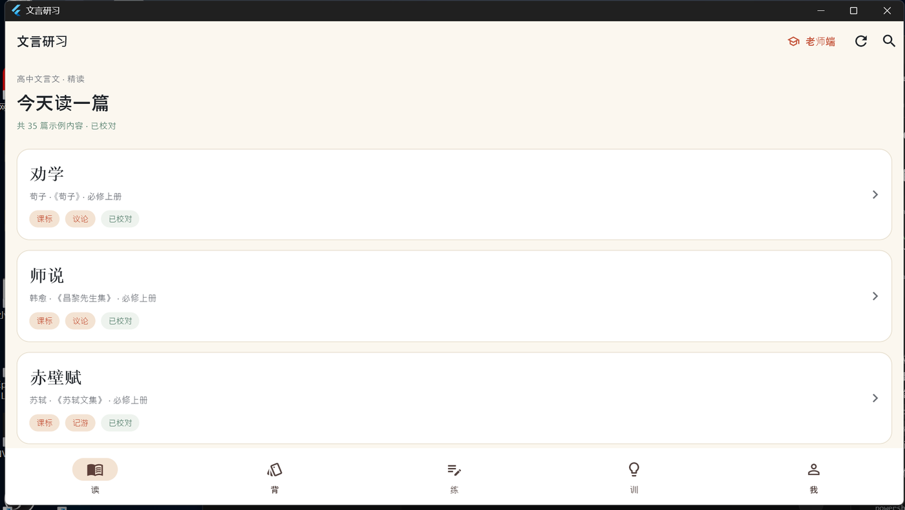

高中文言文 · 离线学习工具
文言研习
安装与使用教程
版本 v0.1.16 · Android 学生端 + Windows 老师端
2026 年 10 月

目录
- 一、认识文言研习
- 二、Windows 电脑端安装
- 三、老师端使用
- 四、Android 手机安装
- 五、学生端使用
- 六、内容包导入与更新
- 七、数据、备份与卸载
- 八、常见问题（FAQ）
- 九、分发建议与文案
- 附录：版本与内容清单
一、认识文言研习
文言研习是一套完全离线的文言文学习工具，一套 Flutter 代码同时提供两个端：
- Android 学生端：读课文、看注释、背字词卡、刷题、词义专项训练。
- Windows 老师端：编辑课文与词条、校对、出题、排序、导出内容包。
两个端之间不联网、不登录、不依赖服务器。老师在学校电脑上编辑好内容，导出 .wyc 内容包，通过 QQ/微信/数据线发到手机，学生在 App 里导入即可。
1.1 拿到哪些文件
| 文件 | 用途 | 放到哪里 |
|---|
| 文言研习-v0.1.16-测试版.apk | Android 安装包 | 手机 |
| 文言研习-Windows-v0.1.16.zip | Windows 老师端压缩包 | 电脑解压 |
| wenyan-content-2026.10-m6.wyc | 内置内容包（35 篇） | 可选，导入手机/电脑 |
| 本教程（PDF/DOCX） | 安装与使用说明 | 随时查看 |
1.2 运行环境
- Android：Android 7.0 及以上（minSdk 24），约 48 MB 安装包。
- Windows：Windows 10 / 11（64 位），解压后约 100 MB。
- 不需要联网；首次打开也不需要登录或激活。
1.3 数据存在哪里
- Android：App 私有目录 /data/data/com.wenyan.wenyan/files（普通用户看不到，覆盖安装保留）。
- Windows：%APPDATA%\wenyan（资源管理器地址栏输入即可打开）。
- 卸载 App / 删除整个文件夹会清空学习数据；升级安装不会。
二、Windows 电脑端安装
Windows 端是给老师用的，安装本质上是「解压 + 运行」，没有安装向导。
2.1 解压
- 右键 文言研习-Windows-v0.1.16.zip →「全部解压缩」或「解压到当前文件夹」。
- 建议解压到 D 盘或桌面等自己有权限的目录，例如 D:\文言研习。
- 不要直接在压缩包预览窗口里双击 exe，会无法正常产生数据文件。
2.2 运行
- 进入解压后的文件夹，找到 wenyan.exe，双击。
- 若出现蓝色窗口「Windows 已保护你的电脑」，点「更多信息」→「仍要运行」。
- 若杀毒软件误报，选择「允许运行」或把该文件夹加入信任区（程序不联网、不写系统目录）。
- 首次启动会创建 %APPDATA%\wenyan 数据目录。
提示：可以把 wenyan.exe 发送快捷方式到桌面，但不要只复制 exe 一个文件，必须整个文件夹一起用。
2.3 打开老师端
进入 App 后，首页右上角有一个「老师端」按钮，点它进入老师模式。老师端也可以直接当学生端用（阅读、背、练都可用）。
三、老师端使用
老师端的编辑都是即时保存的，改完不需要点「保存」。修改只存在本机，导出内容包后学生才看得到。
3.1 界面结构
- 左侧导航：篇目 / 导出 / 导入。
- 顶部：刷新内容、学生端（返回学生界面）。
- 篇目页：新增篇目、全部标记已校对、全部/待校对/已校对筛选。
3.2 编辑一篇课文
- 点篇目卡片进入编辑器。
- 每句显示序号、原文、译文、词条；右侧有「出题」「删除本句」等按钮。
- 点词条可以改词性、释义；点「新增句子」增加一句；点「新增词条」给当前句加注释。
- 右侧「已校对」开关控制这篇是否计入已校对；批量校对可用快捷键 Ctrl+Enter。
- 篇目列表右侧 ↑ ↓ 可以调整顺序；导出时按这个顺序排列。
3.3 自定义题目（出题）
- 在编辑器里找到要出题的那一句，点右侧「问号」图标。
- 弹窗里会带上句子原文；填写：加点词、正确释义、干扰项 1/2/3、解析（可选）。
- 点「保存」。题目会存在本机，并随内容包一起导出。
- 学生导入内容包后，刷题时会随机出现这些题。
提示：干扰项尽量选同一篇课文里的其他释义，难度更接近考试；至少填 1 个干扰项才能保存。
3.4 批量校对与快捷键
| 快捷键 | 作用 |
|---|
| Ctrl + Enter | 当前篇目标记为已校对 |
| Ctrl + P | 预览当前篇目 |
| Ctrl + K | 进入课堂模式 |
篇目列表上方的「全部 / 待校对 / 已校对」可以快速筛出还没校对的篇目。
3.5 导出内容包
- 左侧点「导出」。
- 在保存对话框里选择位置（建议桌面），文件名默认带日期，扩展名 .wyc。
- 导出包包含：所有未删除篇目、句子、词条、自定义题目，以及版本号和 SHA-256 校验。
- 把 .wyc 文件通过 QQ/微信发给学生即可。
3.6 导入内容包
左侧「导入」→ 选择 .wyc 文件。导入会新增或覆盖同 ID 篇目，不会清空学生数据。导入后可点「刷新内容」查看。
3.7 课堂模式
在编辑器按 Ctrl+K，或点右上角课堂图标，进入全屏课堂模式：逐句展示、可开关注释/译文、翻句。适合投影上课。
四、Android 手机安装
手机安装的核心是：把 APK 文件传到手机 → 找到它 → 允许安装 → 安装。不同品牌手机的菜单文字略有差异，但步骤一致。
4.1 把 APK 传到手机（任选一种）
- QQ：电脑登录 QQ → 我的设备/手机 → 发送文件 → 手机上点开。
- 微信：文件传输助手 → 发送文件 → 手机上点开。
- 数据线：手机连电脑，把 APK 复制到「Download」文件夹。
- 网盘：上传后手机下载。
4.2 微信/QQ 里不能直接安装怎么办
微信/QQ 出于安全策略，通常不提供「直接安装」，这是正常的。按下面任一方式处理：
- 在 QQ/微信里点开 APK → 右上角「…」→「保存到手机」或「用其他应用打开」。
- 打开手机「文件管理」→「下载」或「QQ/微信 文件夹」→ 找到 .apk → 点击安装。
- 如果弹出「用其他应用打开」，选「软件包安装程序」或「设置」；若没有，先在文件管理器里点。
4.3 允许安装未知应用
首次安装时，系统会提示「为了安全，你的手机不允许安装未知应用」。点「设置」→ 找到当前来源（QQ/微信/文件管理）→ 打开「允许安装」。然后返回继续安装。
4.4 安装与覆盖升级
- 点「安装」→ 等待 →「打开」。
- 以后有新版本 APK，直接再安装一次即可覆盖升级，学习数据会保留。
- 如果提示「应用未安装」，先卸载旧版再装（会清数据，谨慎）；或检查是否与旧版签名一致。
五、学生端使用
底部有五个标签：读、背、练、训、我。下面按顺序说明。
5.1 读：课文阅读
- 首页点任意篇目进入阅读；每句下方有译文。
- 点句中的彩色词，弹出注释卡：词性、释义。
- 右上角「Aa」调字号与行距，设置会保存。
- 右上角「收集本篇生词」把本篇词条加入字词卡。
5.2 背：字词卡与间隔复习
「背」里是按 SRS 间隔重复安排的字词卡。正面是词，先自己回忆；点一下翻到背面看释义，再选择「忘记 / 模糊 / 记住」等评分。
- 第一次没有卡片时，点「一键收集全部生词」或阅读页收集。
- 每天打开「背」，优先复习到期的卡片。
- 评分会影响下次出现时间，坚持几天效果最好。
5.3 练：刷题与错题本
- 「练」→ 开始练习，从 35 篇中抽 10 道词义题。
- 做完显示正确率；答错的词进入「我 → 错题本」。
- 错题本里可以「重练错题」，只抽错题。
5.4 训：词义专项
- 熟词生义 40 条：常见字在文言中的特殊含义。
- 一词多义 25 词 / 80 义项：同字在不同语境的意思。
- 古今异义 30 条：字形相同、古今意义不同。
- 每类可以浏览条目，也可以「自测」抽 10 题。
5.5 我：统计、导入与设置
- 上方统计：复习卡、待复习、错题、今日复习、今日刷题、正确率。
- 「导入内容包」：选择 .wyc 文件导入老师的新内容。
- 「清空学习数据」：清空复习卡与错题（谨慎）。
- 最下方显示版本号，报问题时请提供。
六、内容包导入与更新
内容包（.wyc）是老师端导出的 ZIP 包，包含课文、词条、自定义题目和校验信息。学生导入后就能看到老师的新内容，不需要重新装 APK。
6.1 标准流程
- 老师在 Windows 老师端「导出」，选择保存位置，得到 .wyc。
- 通过 QQ/微信把 .wyc 原文件发给学生（不要压缩、不要改名后缀）。
- 学生打开 App →「我」→「导入内容包」→ 选择文件；或在 QQ/微信里「用其他应用打开」选文言研习。
- 导入成功后回到首页，下拉/刷新即可看到新篇目。
6.2 导入失败常见原因
| 提示/现象 | 原因 | 处理 |
|---|
| 校验失败 / checksum | 文件传输损坏或被改名 | 重新发送原文件 |
| schemaVersion 不支持 | 内容包太新 | 升级 App 到最新版本 |
| 找不到内容 / 0 篇 | 包内没有课文 | 让老师重新导出 |
| 点了没反应 | 选择的是压缩包或错误文件 | 确认扩展名是 .wyc |
6.3 什么时候更新 APK，什么时候更新内容包
| 改了什么 | 需要更新 |
|---|
| 课文、注释、题目 | 内容包 .wyc |
| App 功能、界面、修 bug | 重新安装 APK（覆盖安装保留数据） |
七、数据、备份与卸载
- 学习数据：复习卡、复习记录、错题、今日统计、字号设置。
- Windows 位置：%APPDATA%\wenyan（teacher_edits.json、cards.json、stats.json 等）。
- Android 位置：App 私有目录，普通文件管理器看不到；覆盖安装保留。
- 备份 Windows 数据：退出 App，复制整个 %APPDATA%\wenyan 文件夹。
- 卸载 App 或手动删除该文件夹会清空数据。
- 换手机：先导出/备份；目前没有云同步，需手动迁移。
八、常见问题（FAQ）
Q1：Windows 双击没反应 / 白屏
先确认是整个文件夹解压后运行；若仍空白，把 %APPDATA%\wenyan\error.log 发给开发者。新版本遇到异常会显示红色错误文字，不再纯白屏。
Q2：Windows 提示「Windows 已保护你的电脑」
这是 SmartScreen 对未签名 exe 的提示。点「更多信息」→「仍要运行」。
Q3：手机提示「应用未安装」
可能是旧版签名不同或安装包损坏。先确认 APK 完整（重新传一次）；必要时卸载旧版再装（会清数据）。
Q4：微信/QQ 里点 APK 没有安装按钮
微信/QQ 不直接提供安装入口，先「保存到手机」，再到文件管理器里点开；或选择「用其他应用打开」。
Q5：老师端改完，学生看不到
老师端的修改只在本机。需要「导出」内容包 → 发给学生 → 学生「导入内容包」。
Q6：导入内容包后篇目重复/没变化
同 ID 篇目会覆盖；新 ID 会追加。导入后回首页刷新；若仍不对，核对内容包是否为最新导出。
Q7：字号太小/太大
阅读页右上角「Aa」，调字号与行距，自动保存。
Q8：数据会不会丢
覆盖安装 APK、导入内容包都不会清数据；卸载 App、删除 %APPDATA%\wenyan 会清空。
Q9：内容准确吗
内置 35 篇为 AI 辅助起草 + 结构化校验，释义与译文建议老师抽检后再正式用于教学。发现错误可在老师端直接改。
Q10：支持 iOS / 云同步吗
当前版本不支持 iOS，也不做云同步；通过内容包 + APK 分发。
九、分发建议与文案
9.1 发什么
- 学生：只发 APK +（可选）内容包。
- 老师：发 Windows zip + 教程 + 内容包。
- 群里发 APK 时，建议同时发一条「安装步骤」图，减少重复提问。
9.2 QQ 群文案（可直接复制）
【文言研习 v0.1.16】高中文言文离线学习 App，35 篇课文 + 词义训练。安卓手机装 APK；电脑老师端解压即用。完全离线、不登录。安装：下载 APK → 允许安装未知应用 → 安装。老师端：解压 zip → 双击 wenyan.exe → 右上角「老师端」。
9.3 微信文案（可直接复制）
文言研习 v0.1.16：高中文言文学习工具，学生手机看课文/背词/刷题，老师在电脑编辑内容并导出内容包。APK 在群文件，电脑端 zip 另发。安装遇到问题看《安装与使用教程》。
附录：版本与内容清单
| 项目 | 内容 |
|---|
| 版本 | v0.1.16（versionCode 17） |
| 内置篇目 | 35 篇 |
| 句子 | 994 句 |
| 逐词注释 | 4804 个 |
| 词义训练 | 熟词生义 40 / 一词多义 25 词 / 古今异义 30 |
| 开源地址 | https://github.com/ranqiucheng/wenyan-study |
| 内容包版本 | 2026.10-m6 |
本教程随版本更新；界面以实际版本为准。内容为学习参考，教材版权归原权利人所有。